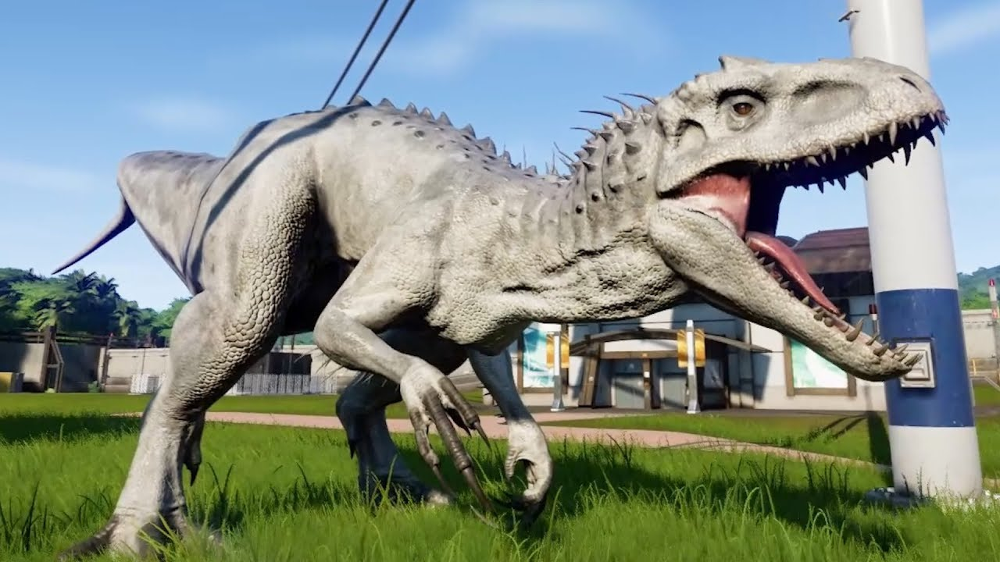

Экзотический гибрид Индоминус Рекс показывал особенности от широкого спектра животных, благодаря структурным генам, полученным из многих различных видов. Его голова ясно показывала влияние абелизавридных и кархародонтозавридных видов. От присутствия генов абелизаврида карнотавра в генетическом составе над глазницами животного имелись небольшие рога, а по носу Индоминуса шёл ряд наростов, как у абелизавридов ругопса и майюнгазавра, чья ДНК была также использована в гибриде для прочей орнаментации чешуи. Помимо наростов на носу на голове Индоминуса также были декоративные остеодермы, происходящие из его абелизавридового наследства. Форма черепа определялась генами тираннозавра рекса и кархародонтозаврида гиганотозавра в его геноме. Из-за гиганотозавра череп был немного вытянутым и заострённым к концу, но также можно было пронаблюдать влияние тираннозавра на форму, который делал череп более выпуклым. За 74 острых загнутых зуба и. рекса, максимальная длина которых была 25 см, и которые были оголены и скрещивались, отвечал дейнозух в генетическом составе. Зубы Индоминуса постоянно регенерировались - это генетическая особенность всех тероподов, а также практически всех акул. Несовершеннолетняя особь Мира Юрского периода имела ряд поврежденных или сломанных зубов, выступающих под разными углами. Похоже, что в нижней челюсти было больше зубов, чем в верхней, а зубы в передней части нижней челюсти имели тенденцию выступать наружу, образуя нижнюю челюсть в форму корзины. Челюсти были длинными и относительно узкими, а также благодаря участию ДНК гремучей змеи способными расширяться на очень широкий угол подобно змеям. На его морде кожа выглядела натянутой, что делало скелетные элементы отчетливо очерченными внешне; это включает в себя полости, подобные лореальным ямкам, используемым гадюками для обнаружения теплового излучения. Ноздри довольно большие, похожие на ноздри тираннозавра, а глаза были направлены вперед. У них были оранжевые радужка и вертикальный зрачок. Вместо того чтобы использовать верхнее и нижнее веки, Индоминус моргал горизонтально, используя толстую прозрачную перевязывающую мембрану, которая выходила из медиального канта, как комодский дракон. У него был сравнительно короткий треугольный розовый язык, который не мог высунуться наружу.
Большую часть тела животного покрывали чрезвычайно жёсткие остеодермы, доставшиеся от генетического материала данных абелизавридов: карнотавра, пикнонемозавра, куилмезавра и виавенатора. Эти остеодермы обеспечивали ему достойную защиту от большинства атак. Они были видны в области шеи и спины, но его чешуйчатая кожа повсюду довольно толстая, что делало Индоминуса почти непроницаемым. Шкура гибрида выдерживала выстрелы из таких огнестрельных оружий как миниган M134. На шее Индоминус имел острые остеодермы-шипы, доставшиеся от ДНК ряда рептилий. Его наиболее заметная анатомическая особенность, кроме огромных челюстей, - это были передние конечности. Спроектированные со структурными генами от Теризинозавра, эти руки были достаточно длинными, чтобы позволить животному ходить на четырёх конечностях или ползать, если это необходимо. Кисти были расположены прямо, как у кроликов, что является распространенным дефектом у многих тероподов InGen, но эта функция на самом деле была полезна для Индоминуса, поскольку они позволяли ему держаться на земле. Каждая рука имела четыре пальца, в том числе один противопоставленный большой палец (который мог достаться от нитей ДНК лягушки) и три гораздо более длинных пальца. Гены теризинозавра также способствовали тому, что все четыре оканчивались большими и острыми когтями, несколькими точными ударами которых индоминус был способен убить таких гигантских динозавров как Апатозавр. Благодаря генетическому участию велоцираптора строение кистей у Индоминуса напоминает таковые у рапторов InGen, у которых самый длинный коготь находился на самом длинном пальце - среднем. Руки были чрезвычайно мускулистыми, и у них были длинные серые протоперья.
Ноги Индоминуса также были очень сильными, и они заканчивались лапами с четырьмя пальцами, включая прибылой, которые также имеют большие когти на них. Он был способен бежать со скоростью 50 км/час, когда находился в замкнутом пространстве, в своём загоне. В то время как он был необязательно четвероногим, Индоминус ходил на двух ногах, когда спешил, в отличие от своего потомка Индораптора. Хвост был длинным для поддержания равновесия. По словам доктора Генри Ву, создателя генома Индоминуса, животное могло достигать 50 футов (15 метров) в длину при взрослом возрасте, что делает его вторым по величине тероподом после спинозавра. Своему размеру он был обязан генам гиганотозавра, использованным во время его создания. Самая долгоживущая особь жила только в юном возрасте и при этом выросла больше, чем ожидалось, достигнув длины в 16,9 метра и высоты в 6,7 метра. Оценки веса предполагают, что она бы достигла 7,3 тонны в полном возрасте. Это сделало бы животное больше, но легче по весу, чем здоровая зрелая самка тираннозавра.
Одной из наиболее впечатляющих особенностей Индоминуса являлась его кожа. Хотя он обычно ходил со светло-серой окраской, хроматофоры в коже животного, доставшиеся от генов каракатицы, позволяли ему менять цвет своего тела (за исключением, конечно, таких частей, как зубы или глаза). По-видимому, на некоторых его остеодермах также есть слой ткани, несущей хроматофоры, что позволяло ему более эффективно скрываться. Кроме того, благодаря нитям ДНК древесной лягушки он был способен модулировать своё инфракрасное излучение и мог определять, когда он успешно понизил температуру своего тела до неопределяемого уровня благодаря способности воспринимать инфракрасное излучение с использованием полостей черепа, похожих на лореальные ямки, обнаруженные у змей. По словам Генри Ву, нити ДНК древесной лягушки также добавили, чтобы животное смогло легко адаптироваться к тропическому климату.
Благодаря тому, что в основе генома животного - ти-рекс, оно также имело огромную силу шейных мыщц и укуса. Из-за того, что И. рекс - частично велоцираптор, он имел соответствующий высокий уровень интеллекта и способность общаться с самими рапторами.